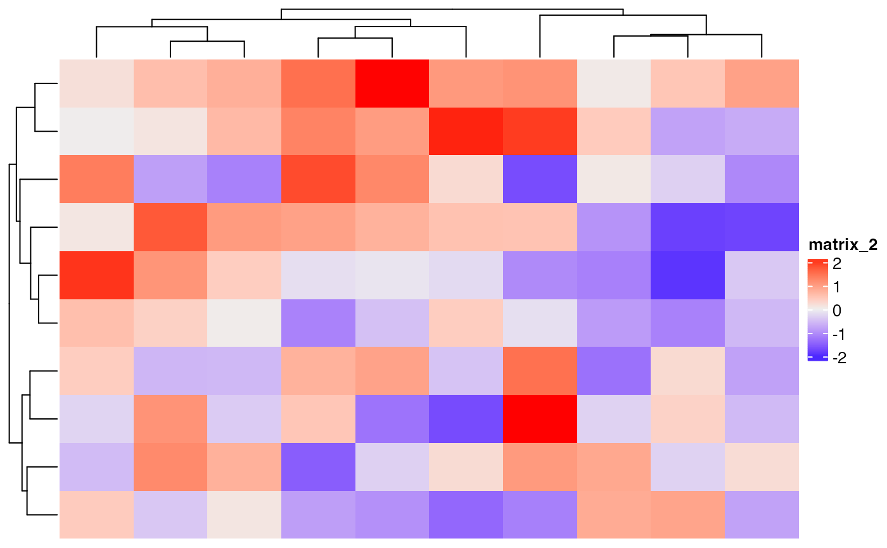
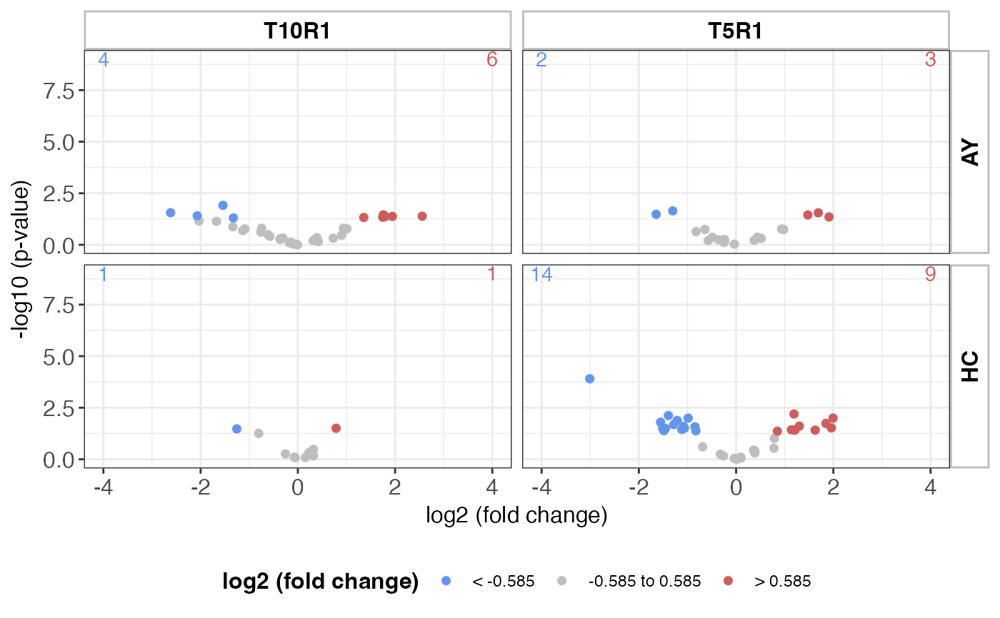

R/MultiModalGraphics-package.R
MultiModalGraphics-package.RdThe MultiModalGraphics package provides rich functionalities for combining different data types into an integrative visual representation. This package facilitates the creation of intuitive visualizations that merge multiple streams of data into a single coherent graphic.
The MultiModalGraphics package offers the following features:
AnnotatedHeatmap: encapsulating a CompexHeatmap object to provide additional functionality
CompositeFeatureHeatmap: generating a heatmap grid, where each row presents a composite of information about a group of related features per row, rather than a single feature (unlike typically seen in conventional heatmaps).
ThresholdedScatterplot: generating customizable scatter plots that can encompass multiple datasets within a single visualization.
generate_data: helper class to provide data to quickly test the 3 classes above.
To get started with the MultiModalGraphics package, you can install it from GitHub:
# Install the development version from GitHub
# install.packages("devtools")
devtools::install_github("famanalytics0/MultiModalGraphics")Useful links:
# Example of creating an AnnotatedHeatmap
library(ComplexHeatmap)
#> Loading required package: grid
#> ========================================
#> ComplexHeatmap version 2.20.0
#> Bioconductor page: http://bioconductor.org/packages/ComplexHeatmap/
#> Github page: https://github.com/jokergoo/ComplexHeatmap
#> Documentation: http://jokergoo.github.io/ComplexHeatmap-reference
#>
#> If you use it in published research, please cite either one:
#> - Gu, Z. Complex Heatmap Visualization. iMeta 2022.
#> - Gu, Z. Complex heatmaps reveal patterns and correlations in multidimensional
#> genomic data. Bioinformatics 2016.
#>
#>
#> The new InteractiveComplexHeatmap package can directly export static
#> complex heatmaps into an interactive Shiny app with zero effort. Have a try!
#>
#> This message can be suppressed by:
#> suppressPackageStartupMessages(library(ComplexHeatmap))
#> ========================================
library(MultiModalGraphics)
data <- matrix(rnorm(100), ncol = 10)
heatmap <- AnnotatedHeatmap(data, pch_val = 20, unit_val = 2,
significant_color = "red",
trending_color = "blue",
significant_pvalue = 0.05,
trending_pvalue = 0.1)
draw(getHeatmapObject(heatmap))

# Example of creating a ThresholdedScatterplot
plotdata <- get_clear_scatterplot_df()
scatterplotObject <- ThresholdedScatterplot(
data = plotdata,
logFoldChange = "log2fc",
timePointColumn = "timePoint",
timePointLevels = c("T10R1", "T5R1")
)
scattered_plot <- createPlot(
scatterplotObject,
color1 = "cornflowerblue",
color2 = "grey",
color3 = "indianred",
highLog2fc = 0.585,
lowLog2fc = -0.585,
negLog10pValue = 1.301,
expressionDirection = "regulation",
negativeLogPValue = "negLog10p",
timeVariable = "reg_time_org",
xAxis = "organ",
yAxis = "timePoint"
)
#> Scale for colour is already present.
#> Adding another scale for colour, which will replace the existing scale.
print(scattered_plot)
